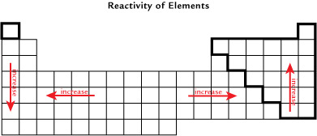

Module 1—Chemical Foundations
Electronegativity
Read
© Courtesy of the Dibner Library of the History of Science and Technology
Read “Electronegativity” on page 81 of your textbook. What sort of information did Linus Pauling use to develop his scale of electronegativities? Are electronegativities measurable values or a representation?
The “Reactivity of Elements” image illustrates the general reactivity trends on the periodic table, with the exception of the noble gases.

Try This
Identify where the highest and lowest values for electronegativity occur on the periodic table. Is the pattern for the reactivity of elements similar to the location of elements with high and low electronegativities?
Discuss
Can you suggest why there may there be a relationship between an element’s reactivity and its electronegativity? Share your thoughts with your classmates or some other people.
In Module 2 you will learn more about how to use electronegativities as you study covalent bonds.
You’ll find the precise electronegativity of each element listed on the periodic table.
Read
How does electronegativity relate to the formation of ionic bonds? Read “Ionic Bonding” on page 83 of your textbook.
Self-Check
SC 5. Prepare a copy of the following table. Use the information on the periodic table to complete this table. Once complete, use the link to check your answers.
 Watch and Listen
Watch and Listen
Earlier in Lesson 3 you watched video clips describing the formation of sodium chloride. This series of video clips will help you understand what influence the ionic bond between particles has on other ions. This results in the formation of a crystal lattice and a chemical ratio for sodium chloride.
Watch the Formation of NaCl video.
Find out why NaCl is a 1:1 ratio.
Watch this video, which illustrates the formation of magnesium oxide. Does magnesium oxide form a crystal lattice with a similar structure to a crystal of sodium chloride? Is the chemical ratio between the magnesium ion and oxide ion also similar to the ratio between sodium and chloride ions?